Spectral analysis of calcium imaging reveals a theta-enriched neuron subpopulation that encodes social behavior
1Halıcıoğlu Data Science Institute 2Department of Cognitive Science
University of California, San Diego
Abstract
Social behavior requires coordinated neural activity, yet whether spectral signatures of individual neurons can predict social state remains unclear. We analyzed calcium imaging recordings from mouse prefrontal cortex across 18 sessions, extracting frequency-band power features from 3,938 neurons. While theta-band (4–7 Hz) power increases during social interaction at the population level (Cohen's d = 0.235, p < 0.001), classification using all neurons fails a permutation test. Spectral clustering reveals two subpopulations: a majority (70%) dominated by infraslow oscillations, and a minority (30%) enriched in delta and theta power. Only this minority subpopulation significantly classifies social vs. solo behavior (AUC = 0.570, permutation p = 0.020), using theta/delta ratio—not raw power—as its top feature. These results suggest that social coding is concentrated in a spectrally distinct neuronal minority.
Introduction
How does the brain distinguish between being with others and being alone? Electrophysiology studies have shown that theta-band (4–7 Hz) oscillations in the prefrontal cortex increase during social interaction in mice (Kuga et al. 2022). But these findings come from local field potentials—a macroscopic signal. We asked whether the same spectral signatures are recoverable at the level of individual neurons, using calcium imaging.
Calcium imaging provides single-cell resolution but acts as a low-pass filter on neural activity: the fluorescent indicator GCaMP6s has a ~600 ms decay time, limiting resolvable frequencies to below ~7 Hz. This makes theta the upper edge of what we can detect—exactly the band implicated in social coding.
We use data from the EDGE (Educating & Developing scholars in Genomics and Engineering) neuroscience course developed by Talmo Pereira and colleagues, which provides calcium fluorescence recordings paired with behavioral video and pose tracking from social interaction experiments. Using this dataset, we develop a signal processing pipeline that extracts spectral features from individual neurons, clusters neurons by their frequency profiles, and tests whether spectral subpopulations differ in their ability to classify behavior. Our analysis follows three questions, each building on the last.
Background
The link between prefrontal theta and social behavior is now supported by multiple electrophysiology studies. Kuga et al. (2022) showed that 4–7 Hz power in the dorsomedial prefrontal cortex increases during social attention in mice, with optogenetic replication of these oscillatory patterns restoring social behavior in Shank3-knockout animals. Mohapatra et al. (2024) extended this by demonstrating that excess prefrontal theta synchrony in Cntnap2-deficient mice impairs social discrimination, establishing that theta-band activity is not merely correlated with social state but causally involved. These findings converge on a clear picture: prefrontal theta oscillations track social engagement, and disrupting them disrupts social behavior.
In parallel, calcium imaging has revealed rich social coding in the medial prefrontal cortex at single-cell resolution. Liang et al. (2018) identified distinct ON and OFF neural ensembles—each comprising only 3–11% of imaged neurons—that encode social exploration in prelimbic cortex. Kingsbury et al. (2019) found inter-brain correlated activity in dorsomedial PFC that predicts social interactions and dominance. Frost, Haggart & Sohal (2021) showed that correlated activity in mPFC subpopulations—not individual firing rates—carries social information, with ~20–30% of neurons providing optimal decoding accuracy.
A striking pattern emerges from this literature: every calcium imaging study of social behavior uses rate-based or correlation-based measures. Neurons are classified as "social-responsive" by whether their activity rates increase or decrease, not by their frequency content. Meanwhile, the electrophysiology studies that implicate theta oscillations operate at the population level (LFP), with no single-neuron spectral characterization.
This leaves a fundamental question unanswered: can theta-band spectral signatures—the dominant marker of social coding in LFP—be recovered from individual neurons using calcium imaging? The technical challenge is real. Calcium indicators are low-pass filters on neural activity: GCaMP6s has a ~600 ms decay constant, placing theta (4–7 Hz) at the very edge of what is recoverable. Spectral analysis of calcium traces has been validated in neuronal cultures (Tibau et al. 2013) and for brain-state classification (Zhu et al. 2018; Brier et al. 2019), but has never been applied to social behavior.
A second gap compounds the first. Theta/delta power ratio—a spectral shape metric—has been a standard feature in EEG sleep staging since the 1980s (van Luijtelaar & Coenen, 1984) and outperforms raw band power for indexing behavioral modes in hippocampal LFP (Schultheiss et al. 2020). Yet this metric has never been computed from calcium imaging data.
We bridge these two literatures by applying spectral feature extraction—Welch PSD, band power, theta/delta ratio—to single-neuron calcium traces during social behavior. Rather than asking which neurons fire more, we ask which neurons oscillate differently. This spectral lens reveals structure invisible to rate-based analysis: a neuron subpopulation defined not by activity level but by frequency profile, whose social coding is masked when pooled with the majority.
The Experiment
A resident mouse is recorded alone in an arena, then joined by an intruder. Video is captured at 25 fps and processed through SLEAP, a deep-learning pose tracker that identifies 15 body keypoints on each animal. We define "social" as frames where the resident's nose is within 10 pixels of the intruder's nearest body part.
Figure 1. SLEAP pose tracking and social proximity analysis. (A) Behavior video with skeleton overlays (green = resident, orange = intruder). (B) Nose-to-body distance with 10-pixel social threshold; the red bar indicates social contact periods. 30-second clip from Session 5 (Animal 5-2, 24hr isolation).
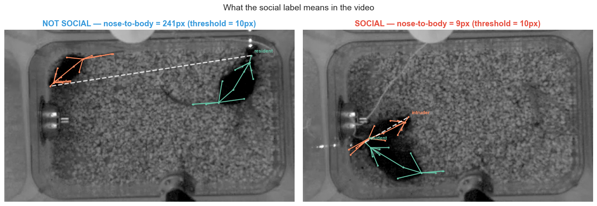
Figure 2. What "social" means in practice. Left: animals separated (distance > 80 px, blue border). Right: nose-to-body contact (distance < 10 px, red border). The dashed white line shows the measured distance between resident nose and intruder body.
These binary labels are resampled from 25 fps to 30 fps to match the calcium imaging frame rate, giving us a behavior timeseries aligned with every neural data point.
The Data
While the mouse behaves, a miniature microscope images calcium fluorescence through a GRIN lens implanted in the prefrontal cortex. Neurons that fire produce transient increases in fluorescence (ΔF/F), giving us a continuous signal for each cell at 30 fps.
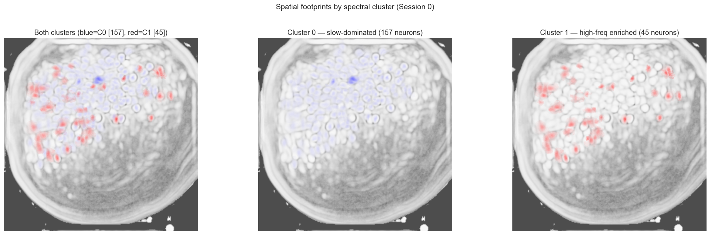
Figure 3. Correlation image (Cn) of the imaging field of view. Brighter regions indicate spatially correlated activity, corresponding to neuronal cell bodies. The circular boundary reflects the GRIN lens aperture.
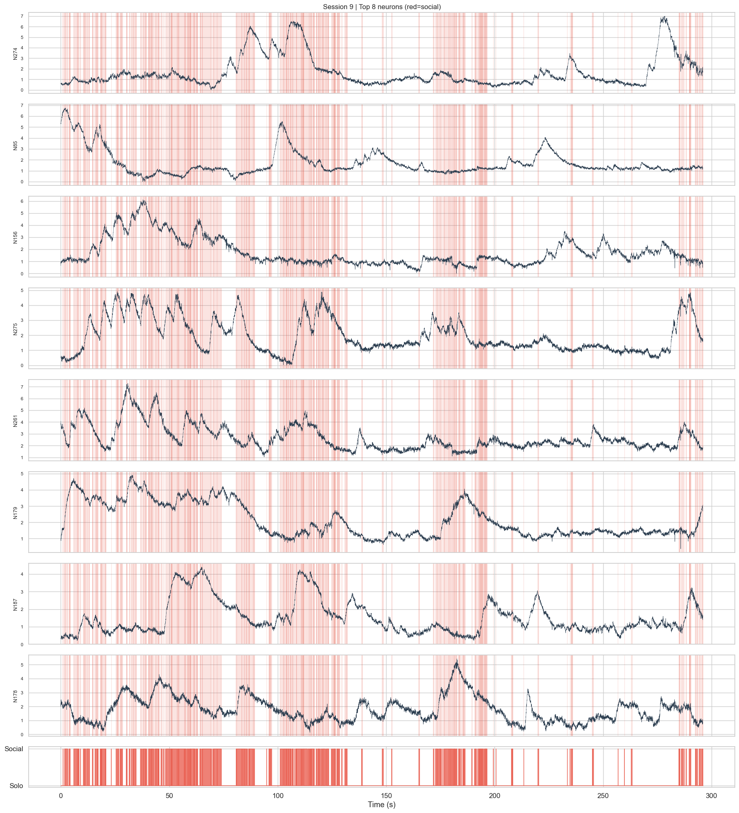
Figure 4. Raw calcium traces from the most active neurons in one session. Red-shaded regions indicate social epochs. Each row is a different neuron; the y-axis shows z-scored fluorescence (ΔF/F).
Signal Properties
Before asking classification questions, we characterized how individual neurons' spectral content relates to behavior. Using Butterworth bandpass filters, we decomposed each neuron's calcium trace into four frequency bands: infraslow (0.01–0.1 Hz), slow (0.1–1 Hz), delta (1–4 Hz), and theta (4–7 Hz).
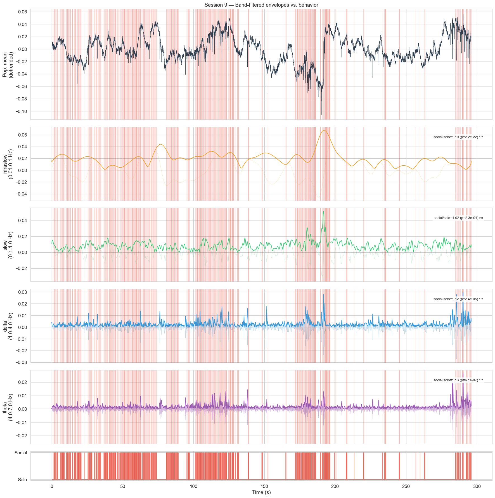
Figure 5. Spectral decomposition of a single neuron's calcium trace. Each row shows a different frequency band with its Hilbert envelope. Red shading marks social epochs. Note the visible modulation of delta and theta envelopes during social periods.
To quantify each neuron's social sensitivity, we computed a Social Modulation Index (SMI): the normalized difference in mean activity between social and solo epochs. An SMI of +1 means exclusively active during social contact; −1 means exclusively suppressed.
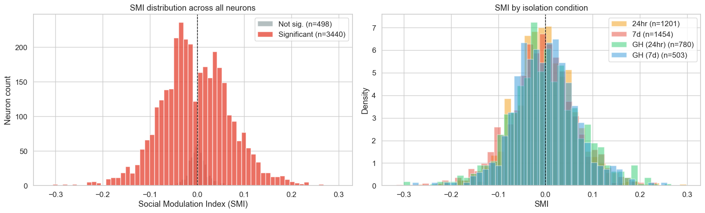
Figure 6. Social modulation across the neural population. Left: distribution of SMI values — 87% of neurons show significant modulation (|SMI| > threshold), but responses are heterogeneous. Right: heatmaps of the most socially excited (top) and suppressed (bottom) neurons, aligned to social bout onset.
Research Questions
The heterogeneous response pattern motivates a three-part investigation, each building on the last:
Frequency Analysis
We computed Welch PSD estimates for every neuron in every 1-second epoch, then compared band power between social and solo windows. Effect sizes (Cohen's d) quantify how much each band's power differs between conditions.
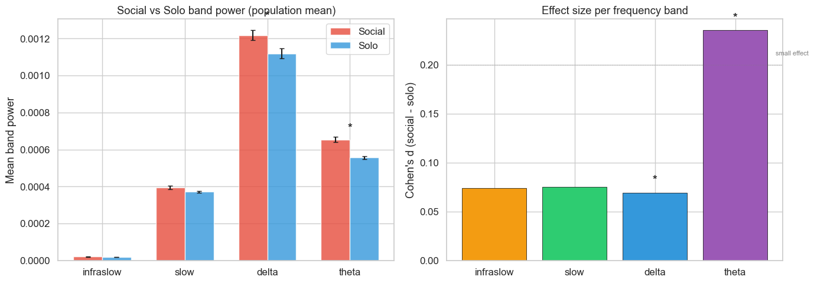
Figure 7. Left: mean band power (log scale) during social vs. solo epochs across all neurons and sessions. Right: Cohen's d effect sizes with 95% bootstrap confidence intervals. Theta shows the largest effect (d = 0.235), followed by delta (d = 0.165). All comparisons p < 0.001 after Bonferroni correction.
Spectral Clustering
Not all neurons contribute equally to the theta signal. K-means clustering (k = 2) on each neuron's fractional band power spectrum — the proportion of total power in each frequency band — reveals two distinct spectral types.
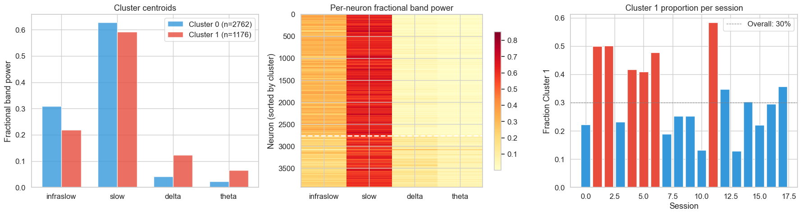
Figure 8. Left: cluster centroid profiles showing fractional band power. Cluster 0 (70% of neurons) is dominated by infraslow/slow power. Cluster 1 (30%) has 3× more delta and theta power. Center: all-neuron heatmap sorted by cluster. Right: cluster proportions are stable across all 18 sessions and isolation conditions.
Classification
We trained linear classifiers (LDA, SVM, Logistic Regression) on spectral features extracted from each cluster separately, using GroupKFold cross-validation by session. Classification performance was validated against a permutation test baseline (1,000 shuffles).
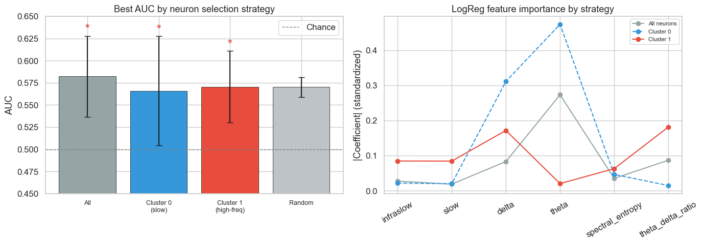
Figure 9. Left: AUC scores for classifiers trained on all neurons, Cluster 0 only, and Cluster 1 only. Dashed lines show permutation-test chance levels. Right: top features by importance — Cluster 1 uses theta/delta ratio (spectral shape), while the full population relies on raw theta power.
Spatial Analysis
If Cluster 1 neurons are functionally distinct, are they also spatially grouped? We mapped each neuron's centroid position onto the correlation image and color-coded by cluster membership.
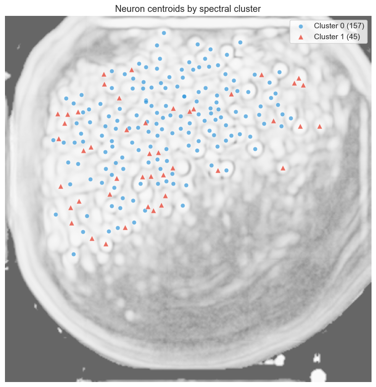
Figure 10. Neuron centroid positions overlaid on the correlation image, colored by cluster membership. Cluster 0 (blue) and Cluster 1 (red) neurons are spatially intermixed throughout the field of view, with no apparent clustering by location.
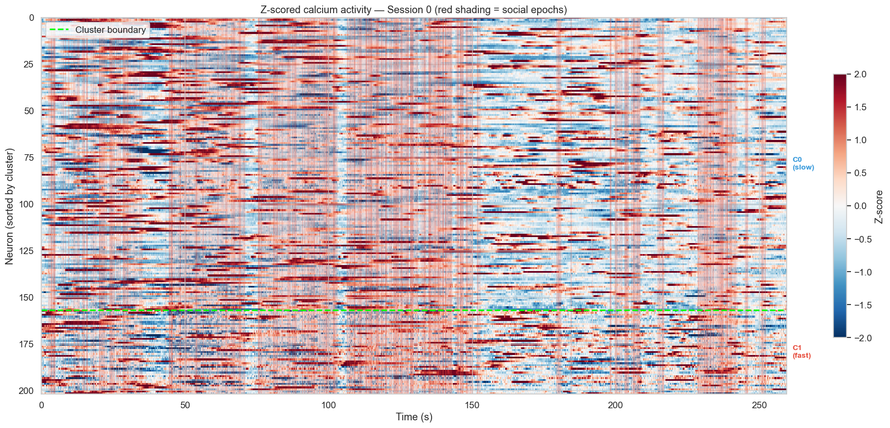
Figure 11. Activity rasters separated by cluster, with social epochs shaded in red. Each row is a neuron; color intensity represents z-scored calcium activity. Cluster 1 neurons show more visible modulation aligned with social transitions.
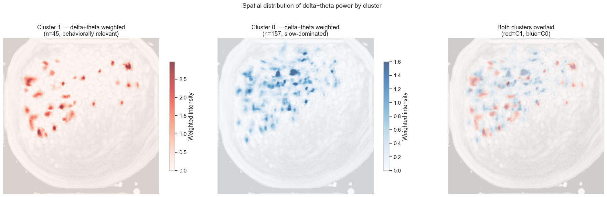
Figure 12. Delta and theta weighted intensity maps. Each neuron's spatial footprint is weighted by its band power. Despite Cluster 1's stronger theta content, both clusters contribute to the spatial distribution — confirming that spectral identity is neuron-intrinsic, not location-dependent.
Conclusion
Our three-question analysis reveals a consistent narrative: theta-band power increases during social interaction, but this signal is not uniformly distributed across neurons. A minority subpopulation (30%) with enriched delta and theta power is both necessary and sufficient for above-chance behavioral classification, while the slow-dominated majority contributes noise that degrades performance.
This result carries a methodological implication: population-level analyses that average across all neurons may miss signals concentrated in spectrally defined subpopulations. The standard approach of computing mean population PSD would have led us to conclude that classification fails — only by first identifying the relevant subpopulation did the signal emerge.
Calcium imaging imposes a hard bandwidth limit — we cannot resolve gamma oscillations (>30 Hz) that electrophysiology studies implicate in social coding. Our recordings span a single cortical region (prefrontal cortex) imaged through a GRIN lens, capturing a 2D projection of a 3D structure. The modest classification AUC (0.570) reflects both genuine biological noise and the inherent limitations of calcium imaging as a proxy for neural activity.
Simultaneous electrophysiology and calcium imaging could test whether Cluster 1 neurons correspond to a known electrophysiological cell type. Multi-region imaging (e.g., prefrontal + amygdala) could reveal whether the theta-enriched subpopulation participates in inter-area synchrony during social behavior. Finally, causal experiments — optogenetic silencing of spectrally identified neurons — would test whether the subpopulation is necessary for social behavior, not just predictive of it.